The 3D world toolbar allows you to affect the visuals of the viewport.
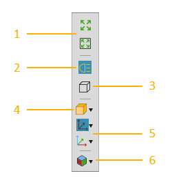
| 1. | Fill View |
| 2. | Headlight |
| 3. | Camera Projection |
| 4. | Rendering |
| 5. | Frame Visibility |
| 6. | View Editor |
Contents ShowHide
You can fill your view with all components or those that are selected in the 3D world. Viewing everything allows you to know the full extent of the current layout and quickly center your view in the 3D world.
Viewing a selection allows you to focus on what is currently being manipulated in the 3D world.
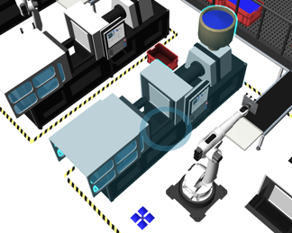
You can toggle the use of a directional light from the camera to highlight the surfaces and edges of component geometry. Generally, you would use this when Rendering mode is set to Face edges shaded in order to improve edge detection when teaching a robot.
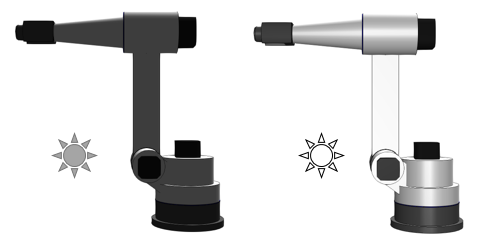
You can switch the projection mode of the 3D world camera from perspective to orthographic. By default, the 3D world camera uses perspective projection to show depth based on how far objects are from the camera.

However, orthographic projection is often used to create drawings and model components.
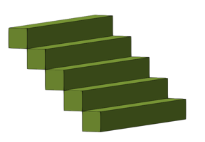
You can define the render mode and quality of objects displayed in the 3D world. The following render modes are available:
| Wireframe | All edges shaded |
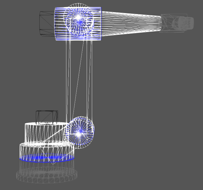 |
 |
| Face edges shaded | X-ray shaded |
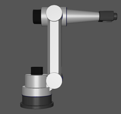 |
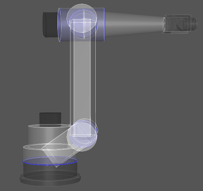 |
| Shaded | Material shaded |
 |
 |
| Realistic shaded | Realistic edge shaded |
 |
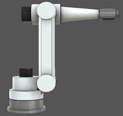 |
You can turn on/off the visibility of all specific types of Frames features in the 3D world.
Robot Bases

Robot Tools

Robot World Frames

Robot Positions
There are additional display options for robot positions, for example you can show/hide position labels, axes and center points.
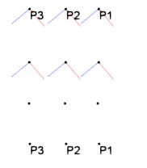
Frame Features

The View Editor allows you to create, edit, select and save 3D world views with a layout.
Create View
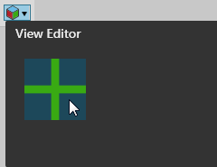
Rename View
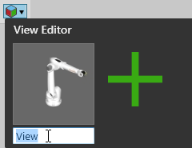
Select and Use View
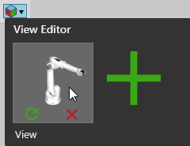
Update View
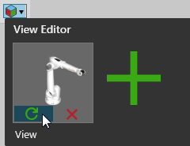
Delete View
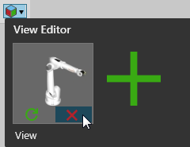
Save View
Save the current layout of the 3D world. Views will be automatically saved with the layout and become available whenever the layout is open in the 3D world.
If at any time you want to switch back and forth from the 3D world's full-screen mode, press F11 or the Function key+F11.
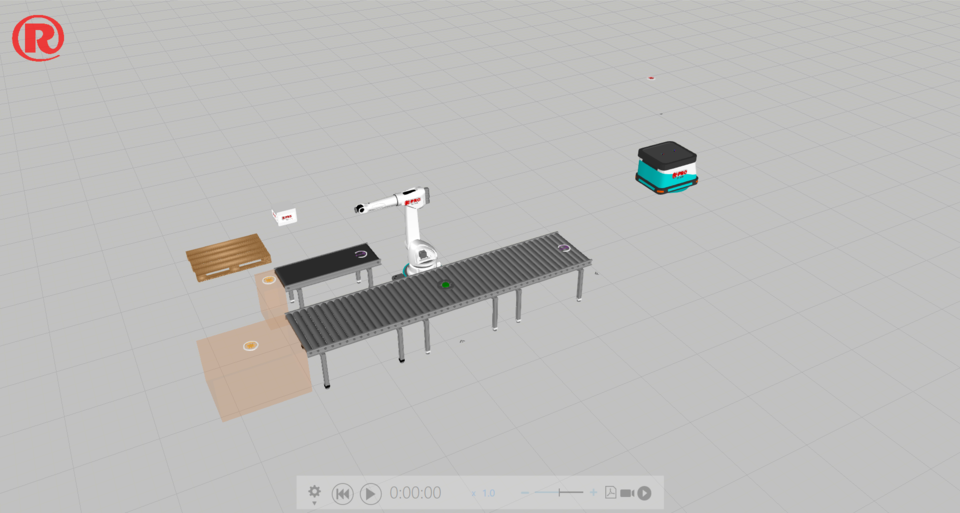